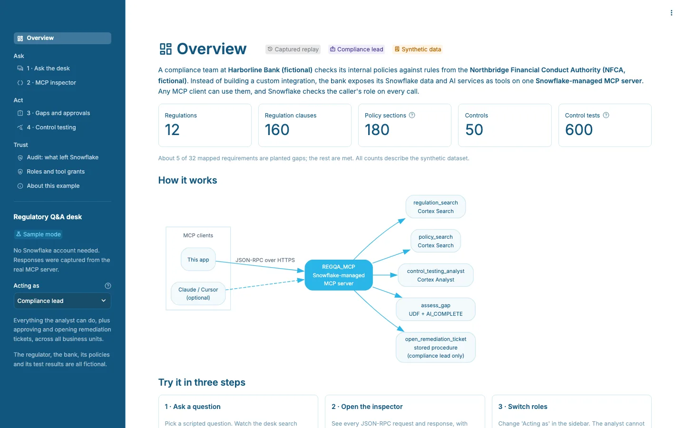
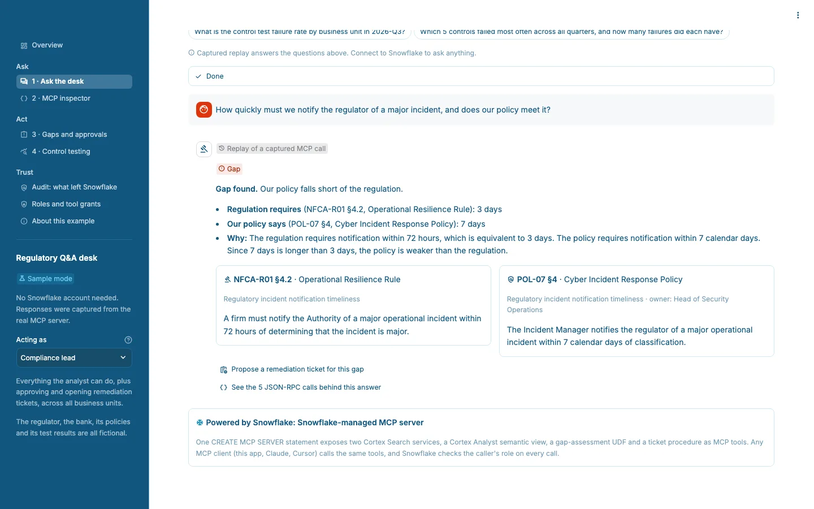
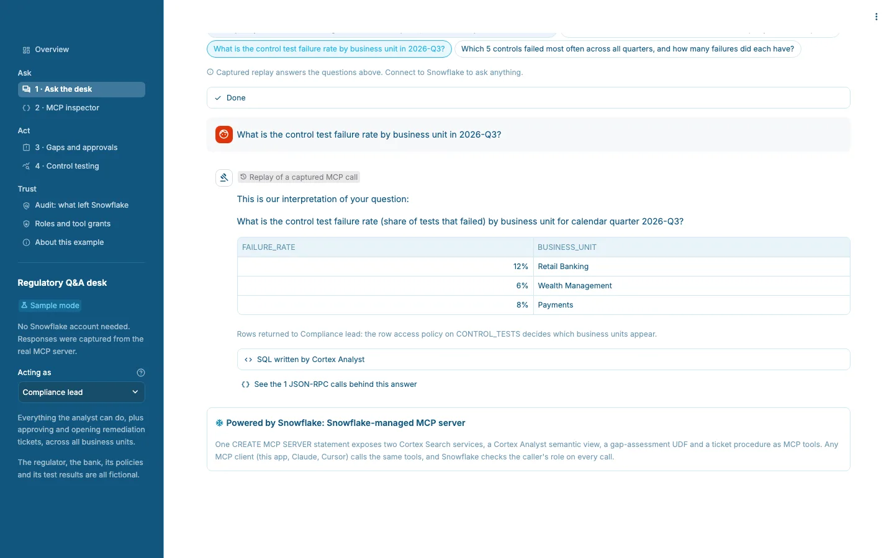
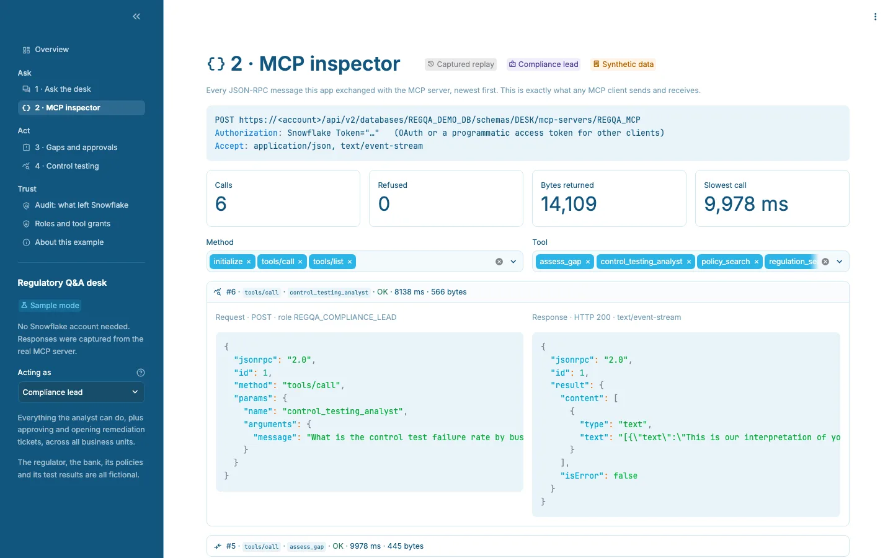
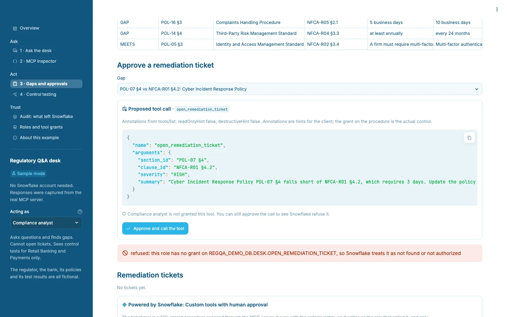
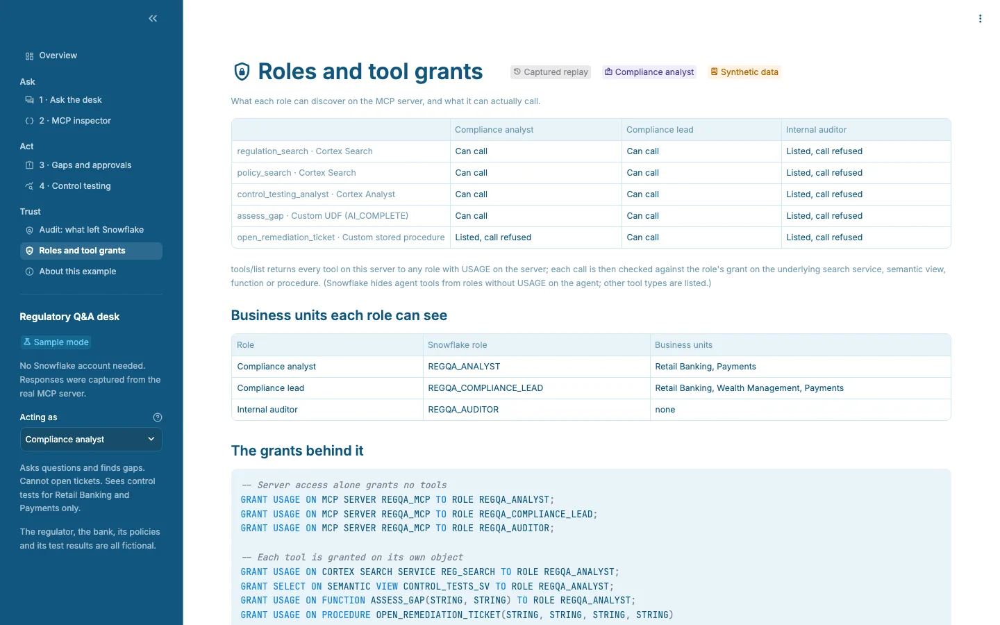
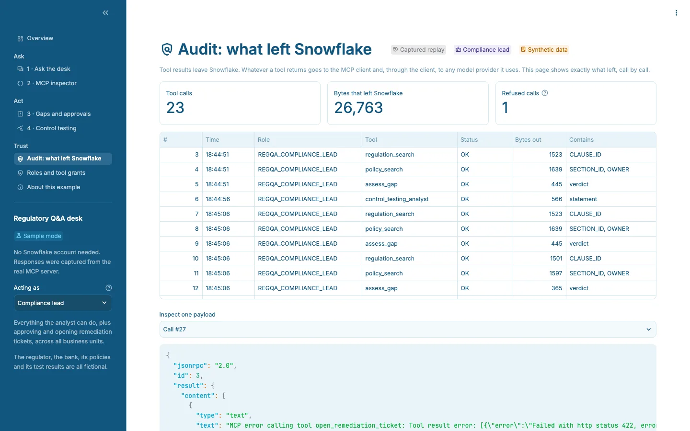

Every AI Assistant Wants Your Data
Compliance teams want AI help checking policies against regulations, but every assistant, IDE and agent framework needs its own integration, and each one is a new path to sensitive data. A Snowflake-managed MCP server gives all of them one standard interface to governed tools. Access to the server grants nothing on its own: each tool is granted separately, row access policies still apply, and writes can wait for a person to approve them.
Search the rules
regulation_search and policy_search are Cortex Search services over about 160 regulation clauses and 180 policy sections.
Judge the gap
assess_gap is a SQL function that calls AI_COMPLETE and returns MEETS, GAP or NOT_RELATED with its reasoning.
Query the evidence
control_testing_analyst is Cortex Analyst on a semantic view. It returns SQL that the client runs under its own role.
Act, with approval
open_remediation_ticket is a stored procedure that writes a ticket. Only the compliance lead is granted it.
Everything This Demo Shows
Each item below works in the browser version with the scripted questions. The label shows where else it runs.
Ask whether a policy meets a rule
Six scripted policy questions cover incident notification, record retention, MFA, privileged access, complaints and vendor reviews. Five reveal a planted gap and one shows a policy that meets the rule. Live, you can type any question.
BROWSER · LOCAL · SNOWFLAKESee the evidence side by side
Each answer cites the regulation clause and the policy section it compared, quotes both, and explains the verdict in plain language. Nothing in the answer comes from outside the tool results.
BROWSER · LOCAL · SNOWFLAKEAsk for numbers
"What is the failure rate by business unit in 2026-Q3?" or "Which 5 controls failed most often?" Cortex Analyst writes SQL against a semantic view, and the app shows the SQL and the rows.
BROWSER · LOCAL · SNOWFLAKEWatch the MCP protocol
The inspector lists every initialize, tools/list and tools/call message with the full JSON request and response, HTTP status, content type, latency and size. You can filter by method and tool.
Check all topics at once
One button runs all six policy checks and builds a gap register: verdict, policy section, regulation clause, what the rule requires and what the policy says.
BROWSER · LOCAL · SNOWFLAKEApprove a write before it happens
For each gap the app drafts an open_remediation_ticket call and shows its exact arguments. Nothing is written until a person selects Approve and call the tool.
Switch roles and see what changes
Compliance lead: all five tools and all business units. Compliance analyst: no ticket tool, and only Retail Banking and Payments in control tests. Internal auditor: can reach the server but every tool call is refused.
BROWSER · LOCAL (SNOWFLAKE: LEAD LIVE, OTHERS REPLAYED)Explore control testing
Failure rates by quarter and business unit, and the controls that fail most often, filtered by the row access policy for the current role. Controls tied to the planted gaps stand out.
BROWSER · LOCAL · SNOWFLAKESee what left Snowflake
A call-by-call list of bytes returned to the client and what each response contained (clause IDs, policy owners, SQL, verdicts, ticket IDs). Refused calls return only an error message.
BROWSER · LOCAL · SNOWFLAKEKeep an audit trail in Snowflake
Every call the app makes is written to MCP_AUDIT with the role, tool, status, latency and size. The auditor and lead can read it; analysts can append but not read.
Open real tickets
As the compliance lead, approved calls insert rows into REMEDIATION_TICKETS, recorded with the user and role that opened them.
Use the same tools from Claude or Cursor
Point any MCP client at the server URL with OAuth. It discovers the same five tools and is held to the same grants and policies as the app.
YOUR OWN MCP CLIENTA 10-Minute Click Path
The app has eight pages and a role switch, so here is one order that tells the whole story. It works in the browser version with no account. Every step uses a scripted question, so the answers match what you read here.
The pages, at a glance
The click path
- OVERVIEW · ACTING AS: COMPLIANCE LEAD
Meet the setup
- Do
- Read the diagram. Leave Acting as on Compliance lead.
- Notice
- The app is just one MCP client. Five tools sit behind one server: two Cortex Search services, Cortex Analyst, a gap UDF and a ticket procedure. The ticket tool is for the lead only.
- 1 · ASK THE DESK
Find a gap
- Click
- How quickly must we notify the regulator of a major incident, and does our policy meet it?
- Notice
- The status box lists three tool calls: search regulations, search policies, assess the gap. The answer is Gap: the rule says 72 hours (NFCA-R01 §4.2), and the policy says 7 days (POL-07 §4). Both texts appear side by side.
- 1 · ASK THE DESK
See a policy that passes
- Click
- Do we require multi-factor authentication for remote access…?
- Notice
- The verdict is Meets. The gap tool doesn't flag everything, and it tells a matching policy apart from a weaker one.
- 1 · ASK THE DESK
Ask for numbers
- Click
- What is the control test failure rate by business unit in 2026-Q3? Then open SQL written by Cortex Analyst.
- Notice
- This time one tool runs: Cortex Analyst returns SQL, not rows. The app runs that SQL as your role, and the lead sees three business units. Remember this for step 8.
- 2 · MCP INSPECTOR
Look under the hood
- Do
- Expand a
tools/callforregulation_search, then one forassess_gap. - Notice
- The request names a tool and its arguments. The response streams back as Server-Sent Events, and you see its HTTP status, latency and size. The session started with
initializeandtools/list, which is how every MCP client discovers tools.
- 3 · GAPS AND APPROVALS
Check every topic
- Click
- Check all scripted topics.
- Notice
- The gap register fills in: five gaps (incident notice, record retention, privileged access, complaint acknowledgement, vendor reviews) and one policy that meets the rule (MFA).
- 3 · GAPS AND APPROVALS
Approve a ticket
- Do
- Pick a gap, read the proposed
open_remediation_ticketcall, then select Approve and call the tool. - Notice
- Nothing is written until a person approves. As the lead the call succeeds, and a ticket ID appears. In live mode it is a real row in
REMEDIATION_TICKETS.
- SIDEBAR → COMPLIANCE ANALYST
Switch roles
- Do
- Set Acting as to Compliance analyst. On page 3, approve the same ticket again. Then rerun the failure-rate question from step 4 and open 4 · Control testing.
- Notice
- Snowflake refuses the ticket call, because the analyst has no grant on the procedure. The same failure-rate SQL now returns two business units, and Control testing shows Wealth Management as hidden by policy.
- SIDEBAR → INTERNAL AUDITOR · 1 · ASK THE DESK
Try a role with no tools
- Do
- Set Acting as to Internal auditor and pick any question on page 1.
- Notice
- The auditor can reach the server and list its tools, but every call is refused. Roles and tool grants shows why: the grid separates listed from can call.
- AUDIT: WHAT LEFT SNOWFLAKE
Follow the data
- Do
- Open the audit page and inspect a few payloads.
- Notice
- Each call shows its role, status, bytes returned and what it contained. Refused calls returned only an error message. In live mode every call is also in the
MCP_AUDITtable.
The Finished Desk
Screenshots of the running app in sample mode, the same version you can open in your browser. It replays responses captured from the real MCP server. The regulator, the bank and its data are fictional.




initialize, tools/list and tools/call message the app exchanged with the server, with HTTP status, latency and bytes returned.


Click Around First, Connect Later
The same Streamlit code runs both ways. The difference is where the MCP responses come from: a file recorded from the real server, or the real server itself. The sidebar always shows which one you are using, and every answer is labeled Replay of a captured MCP call or Live call to the MCP server.
Captured replay, in your browser
- No Snowflake account, login or install
- Python runs in the browser with stlite
- Replays real MCP responses captured from the server, labeled as replays
- Eight scripted questions, for each of the three roles
Live, against your MCP server
- JSON-RPC over HTTPS to
REGQA_MCPin your account - Ask any question, not just the scripted ones
- Locally, switch between all three roles
- In Streamlit in Snowflake, runs as the compliance lead
- Tickets and the audit log written to Snowflake
| Captured replay | Live Snowflake | |
|---|---|---|
| Where the answers come from | A file, data/captured_mcp.json, recorded from the real REGQA_MCP server by scripts/capture.py. The JSON you see in the inspector is exactly what the server returned when it was recorded. | JSON-RPC calls over HTTPS to the REGQA_MCP server in your account, made at the moment you ask. |
| What you need | Nothing. It runs in your browser, or on a laptop with REGQA_SAMPLE_ONLY=1. | A Snowflake account with the setup script run, and either a local connection or the app deployed to Streamlit in Snowflake. |
| Questions you can ask | The eight scripted questions, for each of the three roles. Free-text questions are turned off. | Anything. The search, gap, Cortex Analyst and ticket tools run for real. |
| AI output | The verdicts, explanations and SQL that AI_COMPLETE and Cortex Analyst produced in the recorded run. They don't change. | Generated fresh on each call, so wording can vary slightly between runs. |
| Roles and refusals | The recorded responses for each role, including Snowflake's real refusal messages. | Enforced by Snowflake on every call. Locally the app opens a session per role. In Streamlit in Snowflake it runs as the compliance lead, and the other two roles are shown from the replay. |
| Control testing data | Generated in the app from the same seed as the Snowflake tables, filtered with the same business-unit rule as the row access policy. | Read from CONTROL_TESTS, filtered by the row access policy. |
| Tickets | Kept in your browser session only. The ticket ID shown is the one from the recorded run. | Inserted into REMEDIATION_TICKETS with your user and role. |
| Audit trail | The inspector and audit pages, for this session. | The same pages, plus every call written to MCP_AUDIT. |
| Timing | The latency recorded with each call. The replay itself is instant. | About half a second per search, and 5 to 12 seconds per gap assessment or Cortex Analyst call. |
| Data leaving your device | None. The browser version runs entirely in the page. | Tool results go from Snowflake to the app. With Claude or Cursor, they also go to that client's model provider. |
Three Ways to Run the Demo
A. In your browser (no account)
- Open the browser version. Go to Try it now. Python loads in about 15 seconds.
- Ask a question. On 1 · Ask the desk, pick "How quickly must we notify the regulator…". The desk searches, assesses and answers with citations.
- Open the inspector. 2 · MCP inspector shows each JSON-RPC request and response.
- Switch roles. Change Acting as in the sidebar to Compliance analyst, then approve a ticket on 3 · Gaps and approvals and watch Snowflake refuse it. Try Internal auditor to see every tool refused.
B. On your laptop, against your account
- Prerequisites: Enterprise Edition, Cortex Search, Cortex Analyst and
AI_COMPLETEin your region, and a Snowflake CLI connection. - 1. Run the setup script. Replace
<YOUR_USER>in sql/regqa_setup.sql and run it in a Snowsight worksheet, or withsnow sql -f sql/regqa_setup.sql --enable-templating NONE. It creates the data, two search services, a semantic view, two custom tools, the MCP server, three roles and a row access policy, then checks them. Skip the optional app step for now. - 2. Install and run.
pip install "streamlit[snowflake]==1.65.0" altair requests, thenSNOWFLAKE_DEFAULT_CONNECTION_NAME=<connection> streamlit run streamlit_app.py. Your user needs the threeREGQA_roles, which the script grants. - 3. Switch to live. Choose Live Snowflake in the sidebar. The app opens one session per role, so each call runs with that role's grants.
C. In Streamlit in Snowflake
- 1. Run the app step. In the setup script's app step, set
<YOUR_ORG>-<YOUR_ACCOUNT>(with hyphens) and your compute pool and PyPI integration names, then run it. It lets the compliance lead own the app and reach the account's MCP endpoint. - 2. Deploy as the lead.
snow streamlit deploy regqa_desk --role REGQA_COMPLIANCE_LEAD. If your connection can't switch roles, usepython scripts/deploy_as_role.py. - 3. Clean up. Uncomment and run the cleanup step. Dropping
REGQA_DEMO_DBalso removes the app.
Connect Claude or Cursor to the Same Tools
After setup, any MCP client can use the server. Create an OAuth security integration, set your user's default role to one of the REGQA_ roles, and add the server URL. Use hyphens, not underscores, in the host name.
https://<org>-<account>.snowflakecomputing.com/api/v2/databases/REGQA_DEMO_DB/schemas/DESK/mcp-servers/REGQA_MCPWhat Each Step Uses
Snowflake-managed MCP server
One CREATE MCP SERVER statement exposes five tools to any MCP client.
Cortex Search and Cortex Analyst
Ranked regulation and policy text, and SQL from plain-language questions.
AI_COMPLETE in a custom tool
A structured gap verdict, returned as JSON through MCP.
RBAC and row access policies
Per-tool grants, a write tool for one role, and filtered rows for every client.